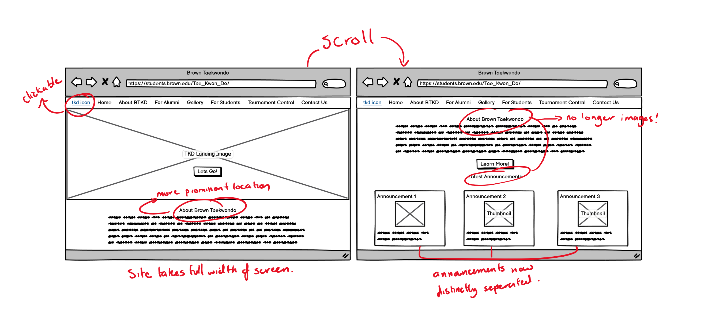
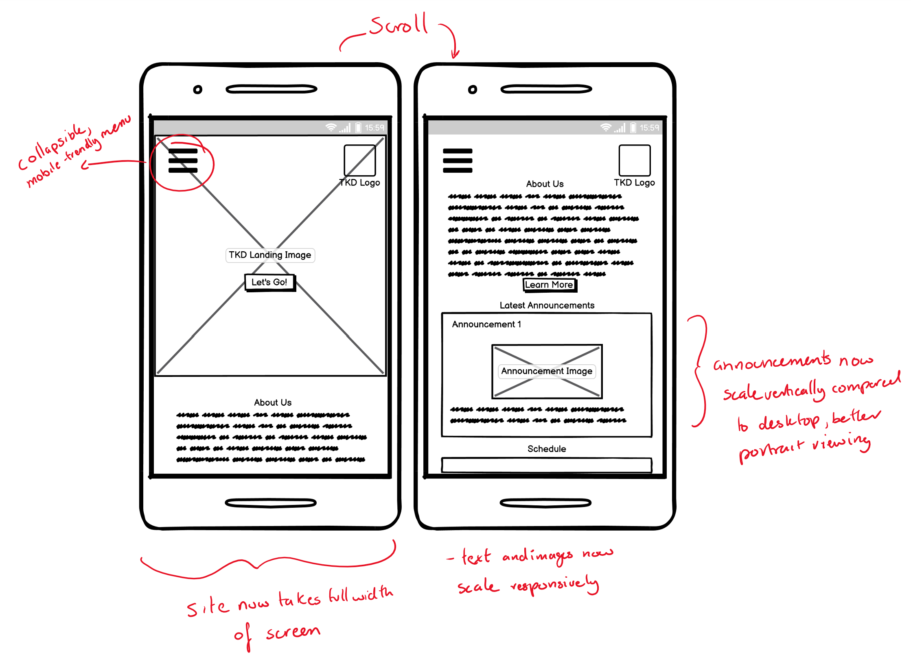
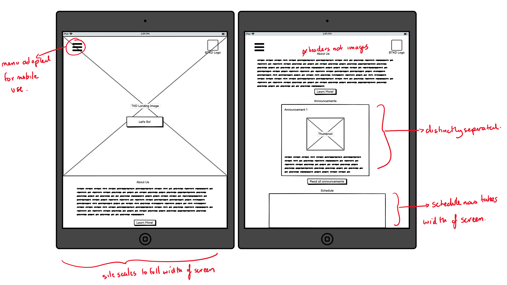
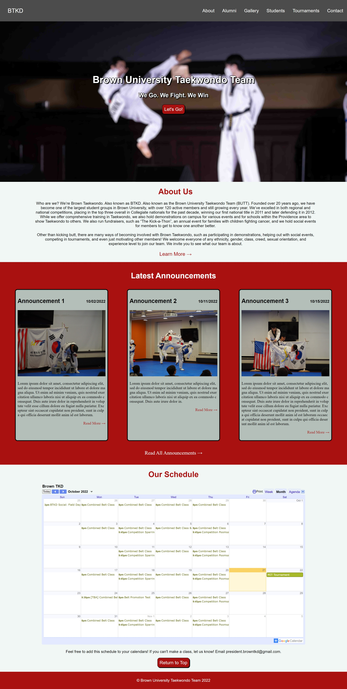

Synopsis
In this project, I:
- Study and Analyze an existing, but outdated website.
- Generate a low-fidelity and high-fidelity mockups of an improved and more responsive version of the website.
- Using HTML/CSS/JS, bring the mockups to life!
- Test the updated website across multiple device types to ensure responsiveness, ensuring key improvements compared to the old website.
Website to be redesigned: Brown University Taekwondo Team
Last updated in 2012, this website serves as a place for those interested to find more information about Brown University Taekwondo.
Find the link to the website here.
Tip: click on photo to expand into new tab!
Usability Problems
There were a few issues I ran into while exploring this website, prompting a redesign. They were:
- The website does not scale well on wider screens, there's a lot of surrounding whitespace.
- On mobile devices, buttons are quite hard to reach and can be a bit small sometimes (notably navigation bar).
- The "About Us" section, something that I'd consider fairly important, is put off to the side, out of the view of the user.
- The "TKD" logo in the upper right, intuitively should take you back to the homepage, but doesn't.
- Certain logos and clickable portions look blurry on higher-resolution screens.
- The announcements section of the page gets cut off arbitrarily at the bottom of the page, different announcements are not well defined.
- All of the headers aren't actually text, they're actually images, so on larger screens, the look blurry.
Accessibility Analysis
When throwing the website through WebAIM WAVE to detect possible accessibility problems, here was a general summary of the site:
- Many images missing "alt" text.
- Multiple empty links for site.
- Navbar contains low-contrast content.
- Images with titles but no text.
- Existence of videos and images.
There a number of issues detected when running the WAVE analysis, most of which make sense. The standout ones are that a number of images are missing significant amounts of “alt” text, which allows screen readers to be more effective at their job. The lack of alt-text on the images on the site makes it difficult for those more visually-impaired, which is understandable why that would be a problem. WAVE also picked up on a bunch of empty links, which I find useful, as those are things that could definitely be cleaned up. One thing that WAVE picked up on was the lack of contrast in the navigation bar. Personally, I don’t believe that the contrast is poor at all.
Visual Redesign
Low-Fidelity Wireframe
Beginning with a low-fidelity wireframe, I turn to Balsamiq. I generated wireframes for 3 different types of devices,
namely desktop browser use, phone use, and vertical tablet use. Since this page is scrollable, I the right wireframes
for each respective devices is a "scrolled down" version. Note: mobile versions will show one announcement, but will normally
show 3 (1 used for illustrative purposes).
All wireframes more or less share the same improvements. The greatest difference exists between the scaling
between devices, the content is improved across the board, as the same assets are used.
Desktop Wireframe:
Phone Wireframe:
Tablet Wireframe:
Tip: click on photo to expand into new tab!
Visual Design Style Guide
After finishing the low-fidelity wireframes in Balsamiq, I generated a style guide for the website. It contains:
- Buttons, with their respective hover changes.
- A color palate, surrounding the red/neutral color aesthetic employed by the original website.
- Text sizing and fonts, using the font Sui Generis as well as a sans-serif font.
- The icons being used for the site.
- The navigation menu/systems being used for the site.
Tip: click on photo to expand into new tab!
High-Fidelity Prototype
Below are high-fidelity prototypes of varying device types created in Figma. Each prototype is annotated with key css-styling to help developers better implement the mockup. Each prototype has multiple "scroll" versions, due to the nature of the page. Each image can be clicked on to open a new tab.
Responsive Redesign
And with that, here's a finalized version of the website. You can find it here.
{kind=link}